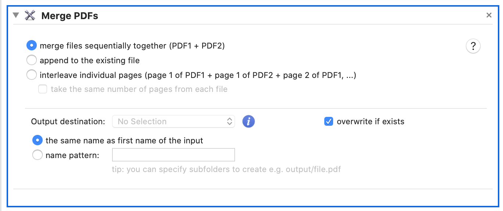
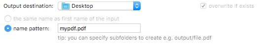

Merge multiple PDF files into one file.

merge files sequentially
This will add all pages of all files one by one and create new PDF file as a result.
append to existing file
Similar to merging files, except that all new pages will be added at the end of existing pages. Appending to existing file instead of overwriting it.
You will have to set output folder and name pattern options for a file you want to append to.

interleave individual pages
Take a page from each input file and add it to the output PDF.
For example :
PDF 1
page 1-1
page 1-2
PDF 2
page 2-1
page 2-2
PDF 3
page 3-1
page 3-2
will result in
PDF
page 1-1
page 2-1
page 3-1
page 1-2
page 2-2
page 3-2
You make ensure the resulting PDF file will contain pages from the input files, you can check take the same number of pages from each file.
For example:
PDF 1 has 3 pages
PDF 2 has 5 pages
PDF 3 has 4 pages
The resulting PDF will have first 3 pages from each file, skipping the rest.